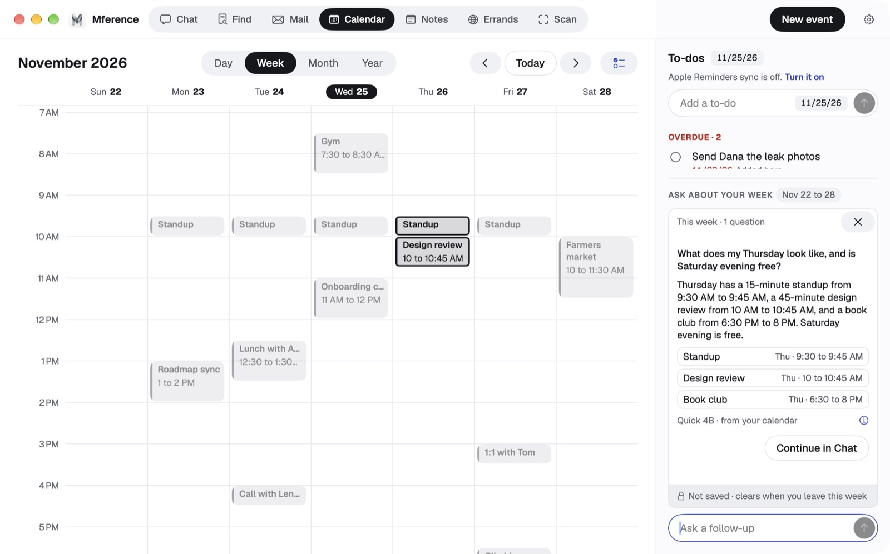

Find
Runs entirely on your Mac
Personal AI, kept personal.
Mference chats, finds your files by what is in them, sorts your mail and plans your week, on a model that runs on the Mac itself. Your chats, notes and files stay on it.
Apple Silicon · macOS 26 or later · Free and open source

Looking in
EverythingDocumentsPhotosVoice memosVideosBest matches


Notes
Product sync, TuesdayLisbon packing listKitchen quotesReading listPriyaCan we ship the onboarding screens next Wednesday?
TomYes, if the copy is settled by Monday. I'll take the contract redlines.
PriyaThen I'll book the review for Wednesday at eleven.
TomAnd let's drop the tutorial video from this release.
Decisions and action items
- Ship onboarding screens Wednesday; tutorial video moves to next release
- Tom: contract redlines and final copy by Monday
- Priya: book the design review, Wed 11:00

The screenshots are from the app itself, running with demo data: the mail, calendar and files, and the people in them, are invented, and web answers are live model output, shown as generated. The Find and Notes panels are animated illustrations.
On deviceThe model, your index and your memory are files on your Mac
8 modelsFrom a 0.6 GB MiniCPM5 to a 35B Qwen
One switchOffline mode turns off web search and model downloads
MITRead every line that touches your data
One assistant
Everything you'd hand to a helper you trust.
Chat
Answers from the web, with sources.
A search engine bundled inside the app sends the search query to public search engines; the conversation never leaves your Mac. Answers carry numbered citations.
1 stride-desks2 oakline/sale3 deskreviews
Replies drafted in your voice.
Reads your Apple Mail, sorts what matters and removes trackers. Nothing is sent until you press Send.
More on Mail →Calendar and to-dos
Your week, planned from your inbox.
Events proposed from mail, to-dos kept in sync with Reminders, and a plain answer to "what's my week like?"
More on Calendar →Notes and meetings
Record a meeting. Get the decisions.
Speaker labels, a summary of decisions and action items, and dictation into any note. Speech recognition runs on your Mac.
More on Notes →Scan
Receipts read themselves.
On-device text recognition reads the receipt; the model fills in merchant, date, total and tax for you to check.
More on Scan →
Privacy
Private isn't a setting. It's where it runs.
There is no Mference account and no Mference server. Flip Offline mode and web search and model downloads stop; everything marked Mac only keeps working. Apple Mail and Calendar keep syncing your accounts on their own.
Offline mode
- Chats and memoryMac only
- Find index and searchesMac only
- Web searchBundled engine
- Mail and calendar syncYour providers
- Model downloadsWhen you ask
Models
Models on Mference.
Eight models that run on your Mac, from Quick for everyday chat and mail to Deep for longer reasoning. Quick, Deep and Bonsai download from inside the app, which shows how much memory each model needs before you load it.
Open source
Its own engine, in Swift and Metal.
MferenceEngine serves every model through one API, with a local OpenAI-compatible server for your own tools. MIT licensed.
# build and open the app
git clone https://github.com/NeelM0906/Mference.git
cd Mference
App/Scripts/searxng/prepare.sh --fetch
App/Scripts/run.sh
Questions
What stays on my Mac?
Your chats, notes, files, mail, calendar, the Find index and the model itself. Mail and calendars keep syncing with your own providers through Apple Mail and Calendar, as they already do.
Does it need the internet?
Only for what you ask for: web search, model downloads, and syncing your own accounts. Offline mode turns off web search and model downloads, and chat, Find, Notes and Scan keep working with what is on your Mac; your accounts keep syncing through Apple Mail and Calendar.
Which Macs does it run on?
Apple Silicon Macs on macOS 26 or later. An 8 GB Mac runs Quick and both MiniCPM5 models; Maple and Qwen 3.6 want 16 GB, Deep and Bonsai more than 16 GB, and Inkling 2 Mini 32 GB. The app shows how much memory each model needs before you load it.
Will the app ask for access to my data?
Only when you first use the feature that needs it. Calendar, Reminders, Mail, Full Disk Access, the microphone, call audio, the camera and Photos are each requested at that moment, never at install.
What does it cost?
Nothing. Mference is open source under the MIT license. It is pre-release, so today you build it from source.
Bring your AI home.
Mference is pre-release. Build it from source today; a signed download comes with the first release.